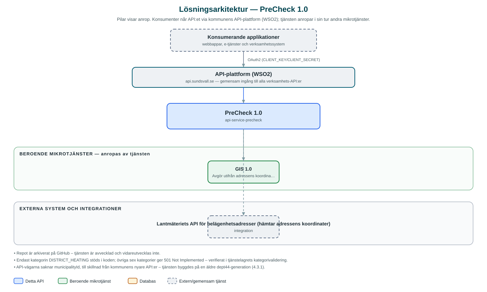

PreCheck
Kontrollerar om en kommunal infrastrukturtjänst – till exempel fjärrvärme – kan levereras till en viss adress. Repot är arkiverat och tjänsten vidareutvecklas inte.
Om API:et
PreCheck svarar på frågan om en viss tjänst kan levereras till en adress, till exempel som förkontroll i en e-tjänst där en fastighetsägare vill beställa fjärrvärme. Anroparen anger adressens id och en tjänstekategori, och API:et returnerar per kategori om anslutning är möjlig, med eventuellt meddelande.
Under huven görs kontrollen i två steg: först hämtas adressens koordinater från Lantmäteriets API för belägenhetsadresser, därefter skickas koordinaterna till kommunens GIS-API som avgör leveransmöjligheten utifrån geografiska data. Koordinatsystemet är konfigurerbart med SWEREF 99 (EPSG 3006) som standard.
Repot är arkiverat på GitHub och tjänsten är avvecklad. Av de sju definierade tjänstekategorierna hann bara fjärrvärme (DISTRICT_HEATING) implementeras – övriga avvisas med statusen Not Implemented.
Det här gör API:et
- Leveranskontroll per adress – GET /address/{addressId}/{category} svarar om tjänsten kan levereras till adressen.
- Koordinatuppslag – Adressens koordinater hämtas automatiskt från Lantmäteriets belägenhetsadress-API.
- GIS-baserad bedömning – Koordinaterna kontrolleras mot kommunens GIS-API som avgör om anslutning är möjlig.
- Valbart referenssystem – Koordinatreferenssystem kan anges per anrop, med SWEREF 99 (3006) som standard.
API-dokumentation
Ingen incheckad OpenAPI-specifikation hittades i källkodsförrådet; se källkoden för aktuell API-dokumentation.
Teknisk dokumentation
Nedan beskrivs hur tjänsten är uppbyggd, vilka andra tjänster den anropar och vad som krävs för att driftsätta den. Informationen är härledd ur källkoden och dess konfiguration på GitHub.
Arkitektur

API:et är en mikrotjänst (Java 17, Spring Boot via kommunens gemensamma tjänsteplattform dept44 (4.3.1), byggd med Maven). Konsumenter når tjänsten via kommunens gemensamma API-plattform (WSO2) på api.sundsvall.se – tjänsten anropas aldrig direkt. Tjänsten anropar i sin tur andra mikrotjänster i kommunens tjänstelandskap. Övriga integrationer som förekommer i koden: Lantmäteriets API för belägenhetsadresser (hämtar adressens koordinater).
Teknikstack
- Språk: Java 17
- Ramverk: Spring Boot via kommunens gemensamma tjänsteplattform dept44 (4.3.1), byggd med Maven
- Övrigt: Resilience4j (circuit breakers mot GIS och Lantmäteriet), OpenFeign-klienter
Beroenden till andra mikrotjänster
Tjänsten anropar följande mikrotjänster. Versionerna är hämtade ur källkodens integrationsklienter.
| Tjänst | Version | Användning |
|---|---|---|
| GIS | 1.0 | Avgör utifrån adressens koordinater om tjänsten kan levereras (endpoint /precheck). |
Konfiguration och driftsättning
- application.yml med URL och OAuth2-klientuppgifter (client credentials) för både GIS- och Lantmäteriintegrationen
- Timeout-inställningar per integration (connect 5 s, read 30 s)
- Ingen databas – tjänsten är helt tillståndslös
Noterbart ur källkoden
- Repot är arkiverat på GitHub – tjänsten är avvecklad och vidareutvecklas inte.
- Endast kategorin DISTRICT_HEATING stöds i koden; övriga sex kategorier ger 501 Not Implemented – verifierat i tjänstelagrets kategorivalidering.
- API-vägarna saknar municipalityId, till skillnad från kommunens nyare API:er – tjänsten byggdes på en äldre dept44-generation (4.3.1).
- Ingen egen OpenAPI-specifikation finns incheckad i repot; specen genererades vid körning.
Källkod
Källkoden är öppen och finns hos Sundsvalls kommun på GitHub. I källkodsförrådet finns även instruktioner för att klona, konfigurera och starta tjänsten i egen miljö.